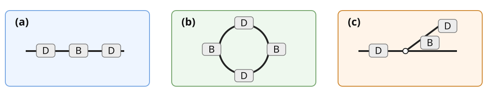
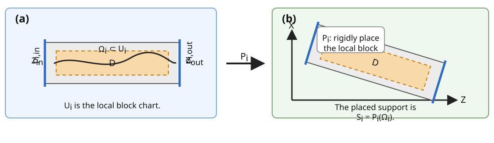
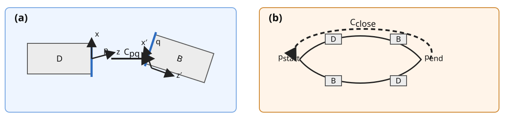

2 Coordinate Systems
This chapter collects the current coordinate-system and placement language for OPALX. It is assembled from the older LaTeX note in opalx/PhysicsManual/opalx-elemts-and-frames/opalx_element_placement.tex, specifically its section 1, section 5, and Appendix A.
2.1 Quick Reader
2.1.1 Symbols and notation
To keep the formulas uniform, this chapter uses the following notation.
| Symbol | Meaning |
|---|---|
| \(K\) | Laboratory or floor Cartesian frame with coordinates \(\mathbf r=(X,Y,Z)\). |
| \(\mathcal B\) | Reference base of the lattice, typically an interval for a transfer line or a closed path for a ring. |
| \(s\) | Reference or reporting coordinate on \(\mathcal B\); in an \(s\)-integrator it is also the independent variable. |
| \(t\) | Physical time; in OPAL-t, IMPACT-T, and the proposed OPALX runtime this is the independent variable. |
| \(U_i\), \(u_i\) | Canonical local chart of element \(i\) and the corresponding local coordinates. |
| \(\psi_i:U_i\to\mathbb{R}^3\) | Intrinsic geometry map of element \(i\) in its canonical frame. |
| \(\Omega_i\subset U_i\) | Local support region on which the element field, aperture, or material model is defined. |
| \(\Sigma_{i,\alpha}\subset \partial\Omega_i\) | Marked boundary chart of element \(i\); this is the geometric origin of a port. |
| \(p_{i,\alpha}=(\Sigma_{i,\alpha},F_{i,\alpha})\) | Port \(\alpha\) of element \(i\), consisting of a boundary chart together with an adapted frame \(F_{i,\alpha}\). |
| \(P_i(u_i,t)\) | Placement map that embeds the local chart of element \(i\) into the laboratory frame. |
| \(\mathcal S_i(t)=P_i(\Omega_i,t)\) | Placed support of element \(i\) in laboratory space at time \(t\). |
| \(T_i(t)\) | Rigid placement transform of element \(i\) at time \(t\); it may be written as a rotation matrix \(R_i(t)\) together with a translation vector \(\mathbf a_i(t)\). |
| \(\Gamma_i(\ell)\) | Optional local reference path of element \(i\), parameterized by the local longitudinal coordinate \(\ell\in[0,L_i]\). |
| \(C_{pq}\) | Rigid transition or patch transform from port \(p\) to port \(q\). |
| \(g_{ij}\) | Transition map between neighboring local charts. |
2.1.2 A geometric viewpoint
Following Forest and Hirata (Forest and Hirata 1992), one should distinguish the placed physical object from the coordinates used to describe it. In that spirit, an OPALX element is not first of all an interval in one global coordinate \(s\). It is a local chart \(U_i\), an intrinsic geometry map \(\psi_i\), a support region \(\Omega_i\subset U_i\), and a finite set of marked interfaces through which that local chart is connected to neighboring charts.
This is the origin of the port notion used throughout this chapter. A port of element \(i\) is a marked boundary chart
\[ \Sigma_{i,\alpha}\subset \partial\Omega_i . \]
together with an adapted frame \(F_{i,\alpha}\). In ordinary beamline language these are simply the entrance face, exit face, branch face, fiducial interface, or closure interface of the object in case of a circular machine. The advantage of introducing the word “port” is that the same notion works for a straight drift, a curved bend, a patch, a branch, or a ring-closing connection.
When two ports are connected, OPALX stores a transition datum between them. In differential-geometric language this is the chart-to-chart handoff across an interface. In fibre-bundle language it is the transition function relating two local trivializations (Forest and Hirata 1992). The port notion therefore does not introduce new physics. It is the implementation-level representative of how local charts are glued together.
A transfer line is then an open chain of ports, while a ring is a closed chain, possibly only up to a prescribed symmetry transform. That is the geometric reason the same placement model can cover both linear and circular machines.
2.1.3 Why the independent variable matters
The earlier MAD-X-centered comparison established a useful baseline: MAD-X describes the machine primarily as an ordered sequence of elements along a reference orbit, and survey or optics calculations are performed relative to that backbone (Herr and Schmidt 2004; Skowronski et al. 2007). The later code survey then showed four distinct placement philosophies relative to that baseline: Elegant remains strongly sequence-centric, MARYLIE is more map-first, IMPACT-T and OPAL are organized around ordered field regions with local frame changes, and Bmad exposes geometry operators such as patches and fiducials (Borland, n.d.; Dragt et al. 2003; Qiang 2022; Sagan, n.d.).
In an \(s\)-based code, placement is fundamentally one-dimensional. An element is placed by specifying where it begins and ends on the design curve. Once that curve is known, global survey coordinates are derived by transporting a local frame along it. The tracker can usually decide which element is active by asking where the particle is in \(s\).
In a \(t\)-based code, placement is fundamentally spatial. A particle is advanced in laboratory time, self-fields are evaluated on a common time slice, and different particles in the bunch may simultaneously occupy different parts of the machine. Therefore the code cannot rely on a single global “current element” inferred from one common \(s\). Each element must instead have a placed spatial support, a local coordinate frame, ports that describe how it connects to neighbours, and usually timing metadata such as RF phase origin or trigger offset.
This leads to the main OPALX conclusion:
- topology,
- survey or reference-curve metadata,
- rigid placement in laboratory space, and
- physics field evaluation
should be treated as separate concepts, even if they are often conflated in traditional \(s\)-based lattice descriptions.
2.2 Geometry Design Principles
2.2.1 Forest-Hirata bundles versus differential geometry
The Forest-Hirata appendix gives a clean abstract reformulation of local element placement (Forest and Hirata 1992). The lattice is treated as a fibre bundle over the machine loop; local neighbourhoods are element intervals; the fibres may be coordinate frames, particle coordinates, maps, or envelopes; and the matching block between local descriptions is a transition function \(g_{ij}\in G\).
The present OPALX note uses a more concrete differential-geometric language. Each element may carry a reference path \(\Gamma_i(\ell)\), a moving orthonormal frame, marked interface charts, and a placed support region in laboratory space. This is closer to implementation because it directly supports field evaluation, aperture checks, and coordinate conversion inside an element.
The two viewpoints answer different questions:
- use differential geometry locally inside an element whenever a curved or adapted chart is numerically useful;
- use fibre-bundle-style transition maps to connect neighboring charts, branches, anchors, and closures without pretending that there must be one globally preferred frame.
2.2.2 What the current OPALX manual already provides
The current manual already contains much of the needed vocabulary (Adelmann et al. 2025). On the OPAL-t side, the independent variable is physical time, the particle push is based on Boris-Buneman, and elements may be positioned by explicit 3D placement attributes or by a compatibility route. Beam lines already admit explicit floor-coordinate placement, and the manual describes a floor-coordinate recurrence in which an element or line frame is advanced by an exit displacement and an exit rotation.
On the OPAL-cycl side, the manual introduces RINGDEFINITION-style anchor data, separate beam-reference initialization, and optional sector replication through symmetry. These features are not contradictory; they are ingredients of one common geometry layer.
The design choice for OPALX should therefore be not to preserve the historical OPAL-t versus OPAL-cycl split internally. Instead, explicit 3D placement, reference-line ordering, anchor data, sector replication, and ring closure should all compile to one underlying geometry representation.
2.2.3 A geometry graph and placement tuple
The cleanest generalization is to represent machine geometry by a directed placement graph
\[ \mathcal G=(\mathcal N,\mathcal E) . \]
Here \(\mathcal N\) is the set of named ports and free anchors, and \(\mathcal E\) is the set of placed objects that span those ports. A placed object may be a physics element, a pure drift, or a tracking-neutral geometry operator such as a patch or survey shift.
This representation unifies linear and circular machines immediately:
- a transfer line is an open connected path in \(\mathcal G\) with two exposed boundary ports,
- a ring is a closed cycle in \(\mathcal G\),
- a sector machine is a subgraph together with one or more symmetry transforms that replicate it.
Every placed object \(i\) should be representable by a tuple
\[ \mathfrak E_i= \bigl( M_i,\, U_i,\, \Omega_i,\, \psi_i,\, p_i^{\mathrm{in}},\, p_i^{\mathrm{out}},\, A_i,\, B_i,\, \Delta T_i^{\mathrm{err}},\, \Delta T_i^{\mathrm{dyn}}(t),\, \tau_i \bigr) . \]
Here \(M_i\) is the physics model, \(U_i\) the canonical local chart, \(\Omega_i\subset U_i\) the local support, \(\psi_i\) the intrinsic geometry map, \(p_i^{\mathrm{in}}\) and \(p_i^{\mathrm{out}}\) the named ports, \(A_i\) and \(B_i\) the nominal entrance and exit transforms, \(\Delta T_i^{\mathrm{err}}\) the static alignment-error transform, \(\Delta T_i^{\mathrm{dyn}}(t)\) any time-dependent motion, and \(\tau_i\) timing metadata.
If \(T(p_i^{\mathrm{in}})\) denotes the laboratory-frame pose of the entrance port, then the runtime pose of the canonical element frame is
\[ T_i(t)=T(p_i^{\mathrm{in}})\,A_i\,\Delta T_i^{\mathrm{err}}\,\Delta T_i^{\mathrm{dyn}}(t) . \]
The corresponding exit-port pose is
\[ T(p_i^{\mathrm{out}})=T_i(t)\,B_i . \]
2.2.4 Transition maps as first-class objects
Whenever two local charts meet, OPALX should store two closely related pieces of information:
- the rigid port-to-port patch transform \(C_{pq}\) attached to the named interface;
- the induced chart-change map \(g_{ij}(t)=P_i^{-1}(\cdot,t)\circ P_j(\cdot,t)\) when an actual local chart conversion is needed.
If the common region is only a glued entrance or exit face, \(g_{ij}\) reduces to the familiar rigid handoff encoded by \(C_{pq}\). If there is volumetric overlap, \(g_{ij}\) provides a precise way to translate diagnostics, apertures, or field-evaluation points from one local chart to the other.
2.2.5 Two complementary coordinate charts
For OPALX it is useful to distinguish explicitly between:
- a reference chart \(s\) for lattice description, sequence order, optics-style diagnostics, and survey reports;
- a world chart \((\mathbf r,t)\) for actual field evaluation, particle pushing, aperture collisions, and self-field coupling.
In a purely MAD-X-like mode the two charts nearly collapse onto one another. In a time-based OPALX mode they do not. The code should therefore allow both to coexist without forcing one to masquerade as the other.
2.2.6 Minimal front-end semantics
The front-end syntax should compile to the graph-based placement model above. The intent is to extend the present manual concepts rather than replace them with an unrelated syntax.
| Input notion | Keep or extend | Proposed semantics |
|---|---|---|
LINE |
Keep | Ordered open path in the placement graph; not a separate machine type. |
| Anchors and explicit placement data | Keep | Explicit anchor pose for a named frame or for the root of a line. |
ELEMEDGE |
Keep as compatibility mode | Reference coordinate only; compile once into explicit transforms and do not use it directly for runtime ownership. |
| Alignment errors | Keep | Populate the static error transform \(\Delta T_i^{\mathrm{err}}\). |
RINGDEFINITION |
Reinterpret | Convenience macro for anchor, closure, symmetry, and beam-reference defaults; not a distinct internal geometry species. |
SYMMETRY |
Keep and generalize | Replicate a subgraph by explicit symmetry transforms. |
| Named ports and patches | Add or expose explicitly | Declare interface charts, pure geometry transforms, and closure constraints independently of the physics elements. |
| Chart and support attributes | Add | Declare STRAIGHT, ARC, or USER intrinsic charts, explicit support regions, and timing metadata. |
2.3 Geometric Background
This section records the small amount of differential-geometric and fibre-bundle language used in the placement discussion. The point, following Forest and Hirata (Forest and Hirata 1992), is to separate the placed object from any one chosen coordinate description.
2.3.1 The bookkeeping base
Let \(\mathcal B\) denote the reference base used for ordering and reporting. For a transfer line, \(\mathcal B\) may be an interval. For a ring, \(\mathcal B\) may be a circle. For a machine whose reference-order topology contains a junction, an extraction line, a splitter, or a switchyard, \(\mathcal B\) may be a graph with labeled edges and junction nodes.
The important point is that \(\mathcal B\) is a bookkeeping base, not the full physical geometry.

2.3.2 Local charts and supports
An individual element is described locally by a chart
\[ \psi_i:U_i\to\mathbb{R}^3 , \]
where \(U_i\) is the canonical local coordinate domain of element \(i\). The subset
\[ \Omega_i\subset U_i \]
is the local support on which the field, aperture, material, or map model is defined. The local block picture is not yet the lab-frame placement. A placement map \(P_i\) rotates and translates that local description into the laboratory frame.

2.3.3 Ports
A port is a distinguished interface chart on the boundary of that support. If
\[ \Sigma_{i,\alpha}\subset\partial\Omega_i \]
is a marked boundary patch and \(F_{i,\alpha}\) is an adapted frame attached to that patch, then
\[ p_{i,\alpha}=(\Sigma_{i,\alpha},F_{i,\alpha}) \]
is a port of the element.
In the simplest case the ports are just the entrance and exit faces. Junctions, splitters, extraction devices, or ring closures introduce additional named interface charts, but they do not change the basic definition.

2.3.4 Transition maps and closure
When two local descriptions are joined, the relevant datum is a transition map between charts. On an overlap or a common interface one may write
\[ g_{ij}=P_i^{-1}\circ P_j . \]
If the connection is localized to named ports \(p\) and \(q\), the same datum can be stored as a rigid port-to-port patch transform \(C_{pq}\). In that sense, the port notion is not an additional physical ingredient. It is the implementation-level representative of a chosen interface chart.
This language is particularly useful for rings. Transporting local frames around a full loop need not return one to the original frame with the identity transform. The residual closure transform is part of the geometry. This is the fibre-bundle point emphasized by Forest and Hirata: one should not force one global chart when the machine is naturally assembled from local ones (Forest and Hirata 1992).